일곱 스킬, 소개는 왜 다 같아 보일까요
AI(Artificial Intelligence) 코딩 스킬이 많아졌어요. 이 영상은 그중 이름난 일곱 가지를 골라요. Jesse Vincent의 Superpowers, YC(Y Combinator) 대표 개리 탄의 gstack, GitHub의 Spec Kit, Anthropic이 공식으로 낸 개발 플러그인 Feature Dev, 맷 포콕의 skills, 애디 오스마니의 agent-skills, 로렌 탄의 pstack이에요.
문제는 소개 문구가 거의 같다는 점이에요. 아래 화면처럼 일곱 개 모두 설계·코드·테스트·검토 네 줄에 체크가 들어가요. 체크 표만 봐서는 고를 수가 없죠.
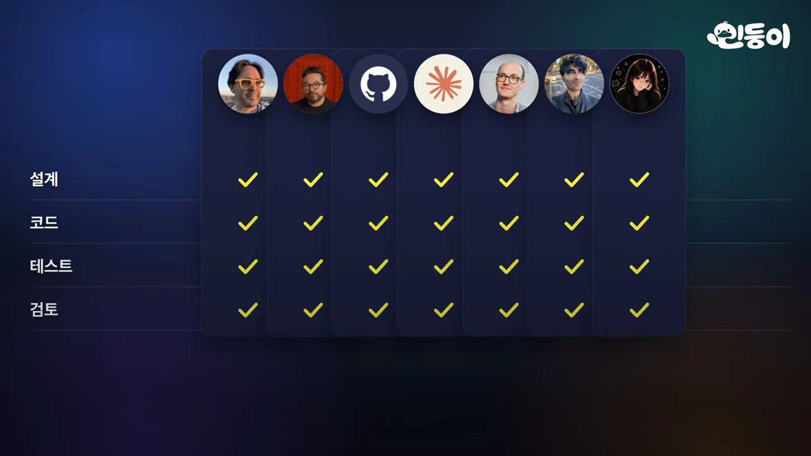
그래서 영상은 예제 하나를 정해 두고 끝까지 같은 예제로 비교해요. 회의록을 자동으로 요약하고, 할 일을 뽑아서, 담당자까지 정해 주는 서비스예요. 이 서비스를 요구사항 → 설계 → 구현 → 검증 네 단계로 만들어 가면서, 단계마다 일곱 스킬이 무엇을 하는지 나란히 놓아요.
결론은 먼저 말해 둬요. 정해진 개발 절차를 따르고 싶은지, 필요한 스킬만 골라 쓰고 싶은지, 어느 부분을 더 꼼꼼히 검토하고 싶은지에 따라 답이 달라져요.
요구사항: 무엇을 만들지 정하기
첫 단계는 무엇을 만들지 정하는 일이에요. 일곱 스킬은 크게 다섯 갈래로 나뉘어요. 질문으로 구체화하기, 만들 필요부터 따지기, 명세로 남기기, 기존 코드부터 보기, 작업 절차 고르기예요.
질문으로 구체화하기: Superpowers, 맷 포콕, 애디 오스마니
세 스킬 모두 사용자에게 질문을 던지지만 묻는 내용이 달라요. 화면의 말풍선을 보면 차이가 드러나요. Superpowers는 '이 서비스로 가장 먼저 풀고 싶은 문제'를, 맷 포콕은 '담당자가 없는 할 일'이나 '마감이 없는 경우'를, 애디 오스마니는 '회의가 끝나고 정말 원하는 결과'를 물어요.
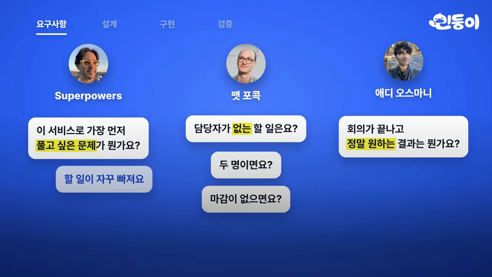
Superpowers의 brainstorming은 질문을 한 번에 하나씩 던지면서 목적과 조건을 파악하고, 그걸 실제로 구현할 수 있는 설계안으로 키워요. 맷 포콕의 grill-me는 결정을 미뤄 둔 곳을 집요하게 파고들어요. 아래 회의록에는 '김 대리랑 이 과장이 같이 보면 되겠네요'라는 말이 있는데, 할 일 '보고서 정리'의 담당자 칸은 비어 있어요. 이럴 때 누구에게 배정할지 같은 조건을 찾아내는 게 grill-me의 일이에요.
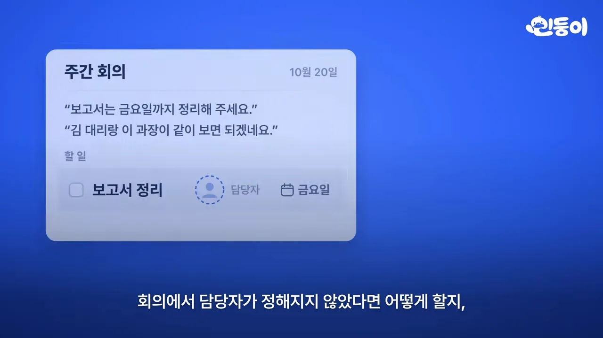
grill-with-docs는 같은 질문에 문서를 더해요. 프로젝트에서 쓰는 용어를 맞춰 가며 묻고, 정리한 용어와 중요한 설계 결정을 문서로 남겨요. 애디 오스마니의 interview-me도 질문으로 의도를 파악하고, idea-refine을 함께 쓰면 아이디어를 개발할 수 있는 요구사항으로 다듬을 수 있어요.
만들 필요부터 따지기: gstack
gstack의 office-hours는 기능 이야기 전에 '애초에 이걸 만들 필요가 있나'를 물어요. 회의록 요약 서비스는 이미 많아요. 어쩌면 진짜 문제는 요약이 아니라, 회의에서 정한 일이 실제로 실행되지 않는 것일 수도 있어요. 아래 화면에서 바깥 원이 '사용자 문제', 안쪽이 '기능'으로 표시된 게 그 뜻이에요.
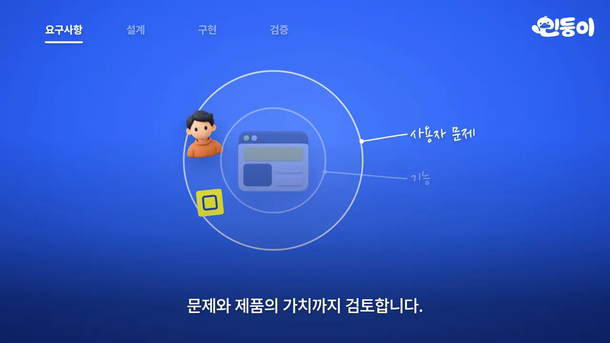
명세로 남기기: Spec Kit
GitHub의 Spec Kit은 정한 내용을 명세서로 남기는 데 무게를 둬요. 이런 방식을 명세 주도 개발이라고 해요. specify로 요구사항을 문서로 만들고, clarify로 덜 정해진 부분을 질문해 채워요. 아래 spec.md의 노란 줄이 그렇게 채운 규칙이에요. '담당자가 언급되지 않으면 임의로 배정하지 않는다'고 적어 뒀고, 오른쪽 할 일 목록의 '회의실 예약'은 그래서 '미배정'으로 남아요.
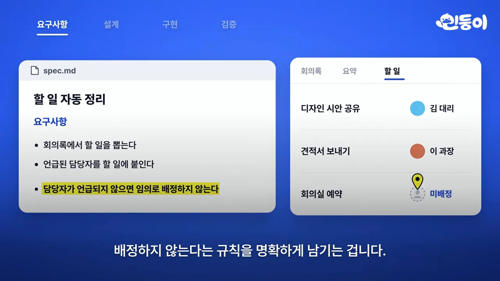
기존 코드부터 보기: Feature Dev
Anthropic의 Feature Dev는 만들 기능을 확인한 다음 기존 프로젝트의 코드를 탐색해요. 왼쪽 폴더 트리에서 meetings/store.ts가 강조돼 있고, 오른쪽에 그 안의 saveMeeting 함수가 보여요. 회의록 저장 기능이 이미 있으니 그 구조를 먼저 조사하는 거예요. 불분명한 부분은 질문으로 확인하고, 새 기능을 기존 시스템에 어떻게 연결할지 구체화해요.
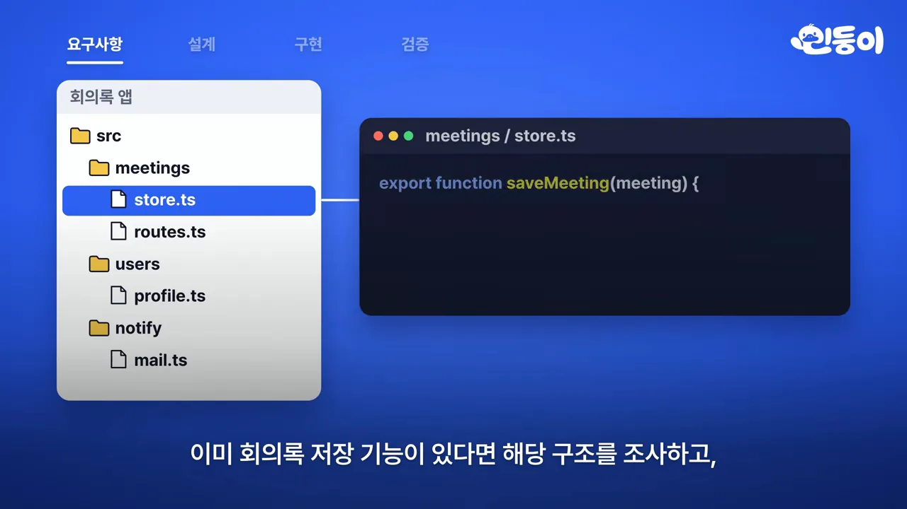
작업 절차 고르기: pstack
로렌 탄의 pstack은 실제 코드 작업에 맞는 절차를 고르는 데 초점을 맞춰요. poteto-mode에 작업 목표와 완료 조건을 주면 상황에 맞는 플레이북을 골라요. 기존 프로젝트를 고친다면 /how로 코드가 어떻게 동작하는지 살피고, /why로 왜 그렇게 설계됐는지 근거를 찾아볼 수도 있어요.
설계: 계획을 나누고 검토하기
요구사항이 정해지면 개발 계획을 세워요. 이 단계의 차이는 두 가지예요. 계획을 어떤 단위로 나누느냐, 그리고 그 계획이 괜찮은지 어떻게 확인하느냐예요.
작업을 어떻게 나눌까
Superpowers, Spec Kit, 애디 오스마니는 모두 작업을 작은 단위로 쪼개요. 그런데 힘을 주는 곳이 달라요.
Superpowers의 writing-plans는 어떤 파일을 새로 만들고 고칠지, 어떤 테스트를 쓸지까지 계획에 적어요. AI가 개발 도중 방향을 잃지 않고 계획대로 따라가게 하려는 거예요.
Spec Kit은 처음 쓴 명세가 끝까지 지켜지게 하는 데 힘을 줘요. plan으로 기술 구조를 정하고 tasks로 작업을 나누는데, 아래 화면처럼 spec.md의 세 기능(회의록 저장, 요약, 담당자 배정)이 tasks.md의 T1·T2·T3에 하나씩 노란 선으로 이어져요. 처음 요구한 기능이 작업 목록에서 빠지지 않게 하는 장치예요.
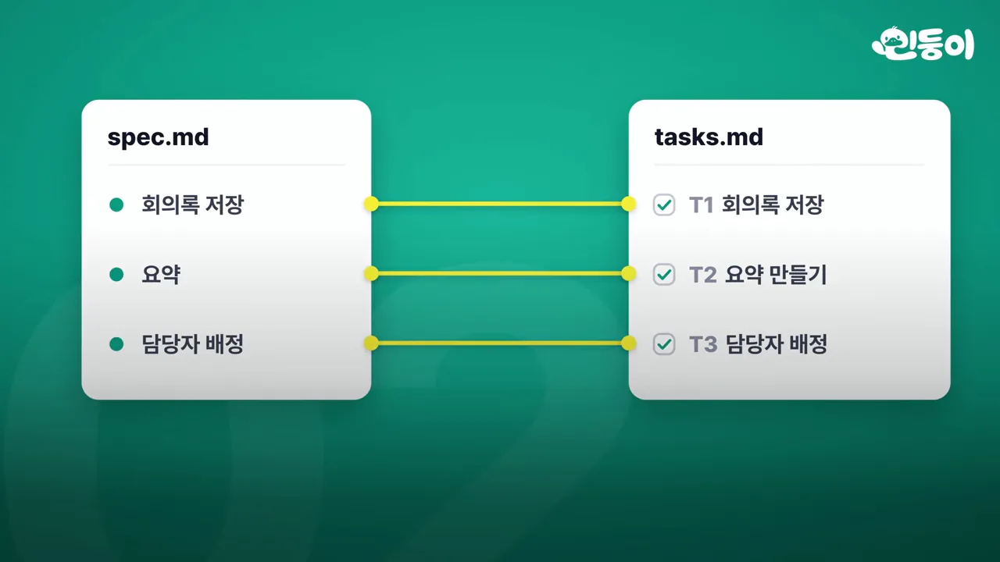
애디 오스마니의 planning-and-task-breakdown도 작업을 나누지만, 카드마다 '완료 기준'을 적고 무엇을 먼저 할지 순서까지 정리해요. 화면의 카드를 보면 담당자 배정은 '할 일마다 담당자', 할 일 추출은 '할 일 빠짐없이 뽑기', 요약은 '3줄 이내로 요약'이 완료 기준이에요.
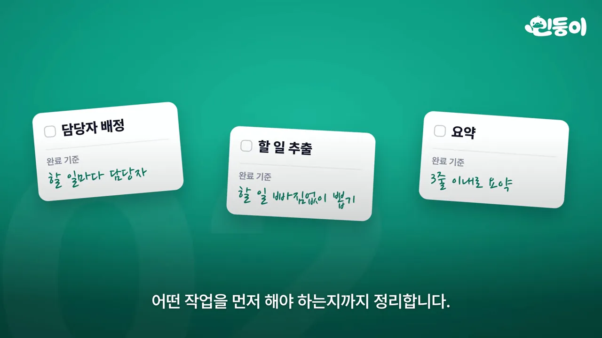
계획이 괜찮은지 확인하기
영상은 계획을 세우는 것만큼 그 계획을 검토하는 게 중요하다고 짚어요. gstack은 이 검토를 세 관점으로 나눠요. plan-ceo-review는 제품 방향을, plan-eng-review는 기술 구조와 예외 상황을, plan-design-review는 사용자 경험을 봐요.
디자인 리뷰가 보는 장면이 아래 화면이에요. 회의에서는 '보고서는 김 대리가 맡아 주세요'라고 했는데 AI는 '주간 보고서 작성'을 이 과장에게 배정했어요. 옆에 경고 표시가 붙고, 사용자가 드롭다운에서 김 대리로 바로 고칠 수 있어요. AI가 틀렸을 때 사용자가 어떻게 고치고 되돌릴지를 계획 단계에서 미리 묻는 거예요.
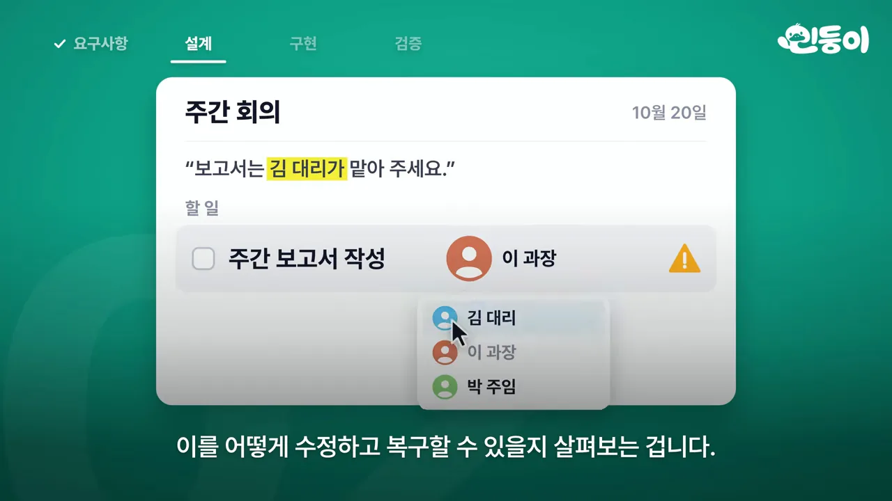
설계안을 여러 개 놓고 고르기
Feature Dev는 설계 과정에서 아키텍처 안을 여러 개 내놓아요. 화면은 기존 코드를 재사용하는 안과 새 모듈로 떼어 내는 안을 개발 속도, 유지보수, 영향 범위 세 기준으로 나란히 놓아요. 각 안의 장단점을 비교해서 사람이 방향을 고르게 도와요.
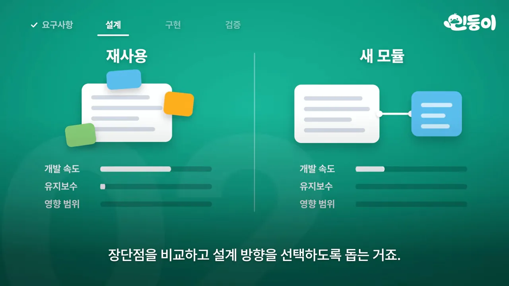
계획이 한 번에 끝나지 않을 만큼 크다면 맷 포콕의 wayfinder가 쓸모 있어요. 정해야 할 것들을 나눠 하나씩 정리하면서, 여러 작업 세션에 걸쳐 프로젝트를 이어 가게 도와요.
pstack의 /architect는 코드를 쓰기 전에 타입, 함수 인터페이스, 모듈 구조부터 정해요. 여러 설계안을 비교하고 싶으면 /arena를 써요. 여러 에이전트에게 같은 과제를 맡겨 서로 다른 접근법(아래 A, B, C)을 만들게 하고, 각각의 장점을 합쳐요. 설계 하나에 바로 기대지 않고 여러 가능성을 검토하는 방식이에요.
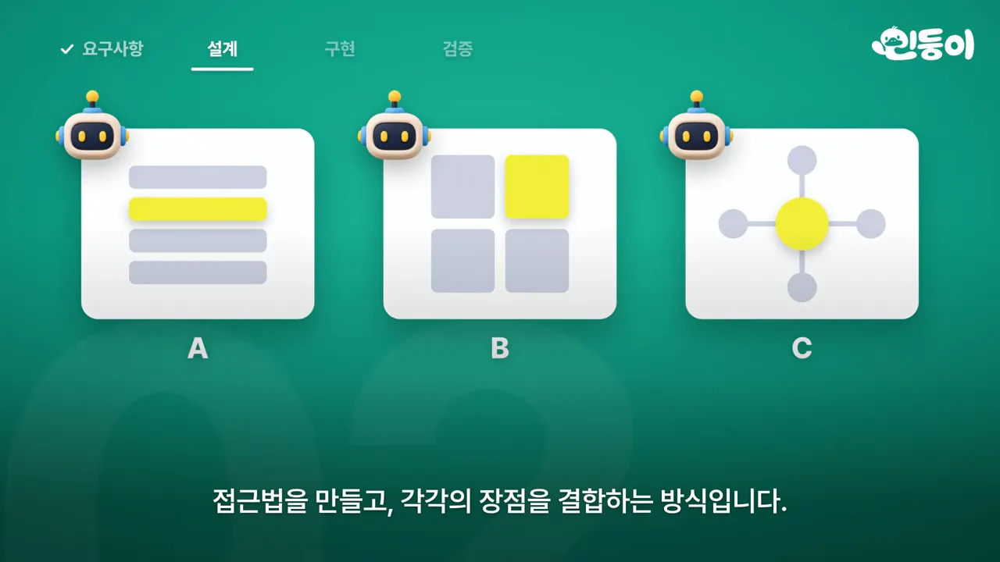
구현: 어떤 순서와 방식으로 짤까
이제 코드를 짜는 단계예요. 여기서는 어떤 순서로, 어떤 방식으로 구현하느냐가 갈려요.
테스트 먼저: Superpowers
Superpowers는 TDD(Test-Driven Development)를 강조해요. 할 일 추출 기능이라면 테스트부터 써요. 아래 화면 왼쪽 tasks.test.ts는 회의록을 넣으면 '보고서 정리, 담당 김 대리'가 나와야 한다고 적어 둔 테스트예요. 먼저 이 테스트가 실패하는 걸 확인하고, 오른쪽 extractTasks를 채워서 아래 초록 줄처럼 통과시켜요.
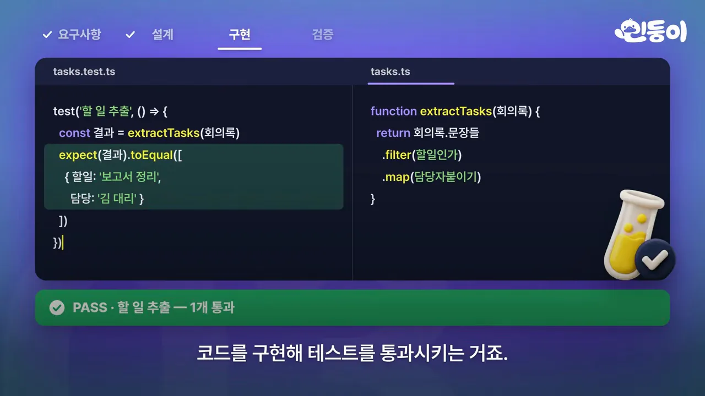
Superpowers는 작업을 작게 나눈 뒤, 조각마다 새 서브에이전트에게 맡기는 방식도 제공해요.
기능 하나씩 끝까지: 애디 오스마니
애디 오스마니의 incremental-implementation도 작게 개발하지만, 초점은 '기능 하나를 완성하고 넘어가기'예요. 화면의 노란 세로 막대가 그 뜻이에요. 화면·서버·저장 세 층을 '요약' 기능 하나가 위에서 아래까지 관통해요. 회의록 하나를 올리고 요약 결과를 확인하는 과정을 먼저 끝낸 다음 다음 기능으로 넘어가요.
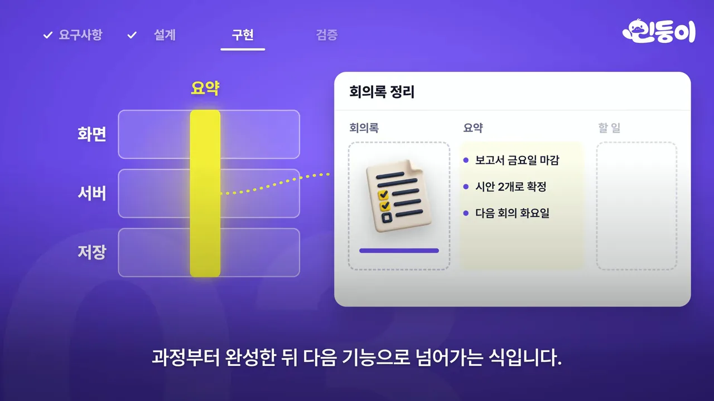
정한 설계를 그대로 구현으로: Spec Kit, Feature Dev
Spec Kit과 Feature Dev는 앞 단계에서 정한 설계를 구현으로 이어요. Spec Kit은 tasks.md에 적힌 순서와 의존 관계대로 진행해요. 아래 그림에서 T001이 끝나야 T002와 T003을 할 수 있고, 둘 다 끝나야 T004로 가요. T003 옆의 [P] 표시는 함께 진행할 수 있는 작업이라는 뜻이에요.
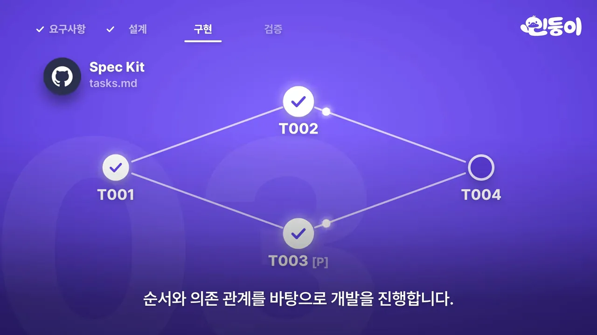
Feature Dev는 앞에서 고른 아키텍처와 기존 프로젝트의 코드 규칙에 맞춰 새 기능을 구현해요.
검토한 계획에서 QA까지 한 줄로: gstack
gstack은 검토를 마친 계획대로 개발하고, 그다음 코드 리뷰와 실제 QA(Quality Assurance)로 이어 가요. 화면의 타임라인이 gstack의 전체 흐름이에요. /office-hours → /plan-ceo-review → /plan-eng-review → 개발 → /review → /qa 순서예요.

골라 쓰기 vs 절차를 맡기기: 맷 포콕, pstack
맷 포콕은 필요한 스킬만 골라 기존 작업 방식에 더하는 접근이에요. 코드 구조를 개선할 땐 아키텍처 관련 스킬을, 테스트가 필요하면 tdd 스킬을 쓰는 식이에요.
pstack의 poteto-mode는 반대쪽이에요. 작업 목표와 완료 조건을 주면 맞는 플레이북을 골라 관련 스킬을 알아서 실행해요. 새 기능을 만들 때와 버그를 고칠 때 서로 다른 절차를 써요. 아래 화면은 '목표: 회의록 요약 기능 추가'를 받았을 때 /how → /architect → 구현 → /interrogate 순서로 스킬이 이어지는 모습이에요. 개발자가 매번 스킬을 고르지 않고 작업에 맞는 절차를 따라가게 만든 거예요.
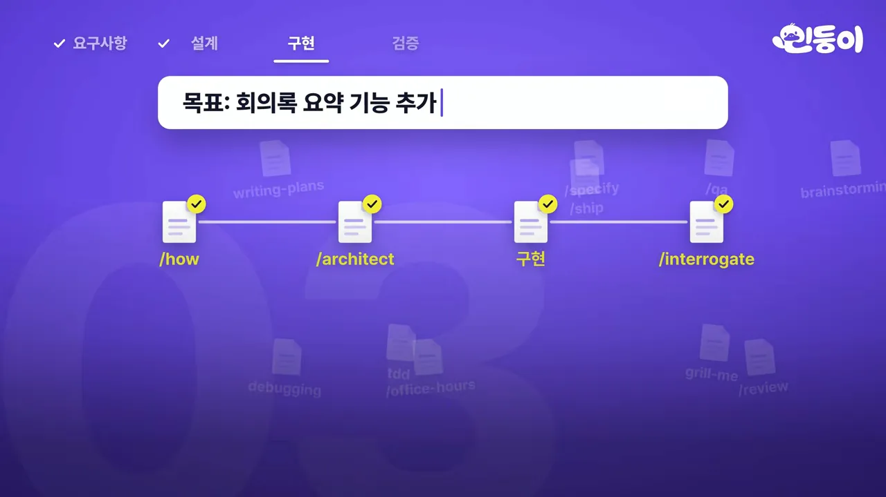
검증: 무엇을 어떻게 확인할까
마지막 단계는 검증이에요. 일곱 스킬 모두 테스트와 리뷰를 중요하게 다루지만, 무엇을 어떻게 확인하는지는 달라요.
테스트로 동작 확인: Superpowers, 맷 포콕, 애디 오스마니
Superpowers와 맷 포콕은 앞에서 본 TDD로 원하는 동작을 확인해요. 테스트가 먼저 실패하는지 보고, 구현한 뒤 통과하게 만들어요.
Superpowers는 여기에 검토 절차를 하나 더 둬요. 서브에이전트가 짠 코드를 두 관문에 통과시키는 거예요. 아래 화면의 왼쪽 문이 '요구사항', 오른쪽 문이 '품질'이에요. 요구사항을 지켰는지, 품질에 문제는 없는지를 따로 봐요.
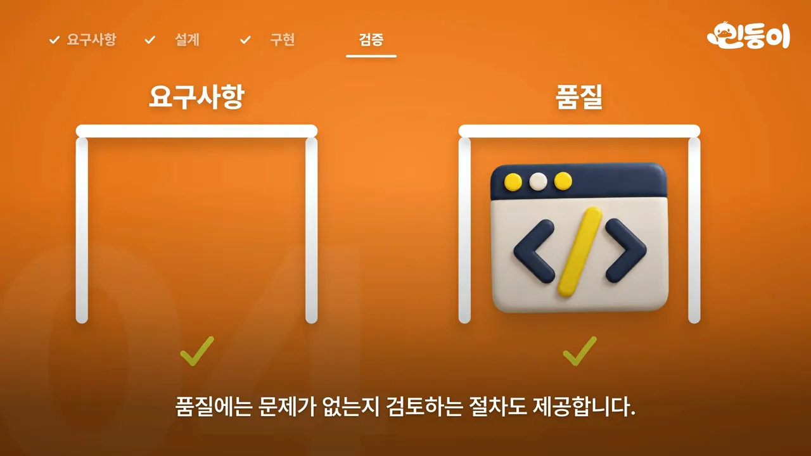
애디 오스마니는 TDD 말고도 코드 리뷰, 보안 점검, 브라우저 테스트처럼 검증 스킬을 여러 개 따로 갖고 있어요.
코드 검토와 실제 동작 확인을 나누기: gstack
gstack은 /review와 /qa를 구분해요. 화면의 README 표에서 /review는 'CI는 통과해도 실제 서비스에서 터지는 버그를 찾는다', /qa는 '브라우저·API·CLI·작업·웹훅 동작을 직접 살펴본다'고 설명해요.
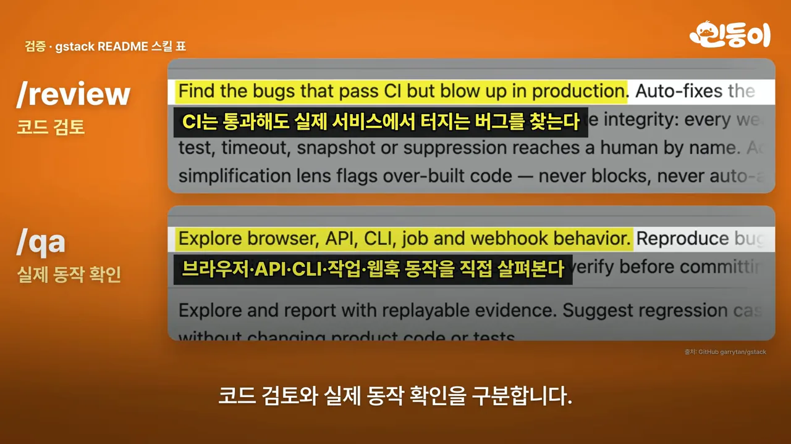
왜 둘을 나누는지는 다음 장면이 보여 줘요. 왼쪽 앱 화면에는 '고객사 회신'의 담당자가 김 대리로 떠 있어요. 그런데 오른쪽 실제 알림은 '이 과장님, 새 할 일이 배정됐어요'라며 이 과장에게 갔어요. 빌드가 성공했다고 이런 문제까지 풀린 건 아니니까, 앱을 실제로 실행해서 확인하는 거예요.
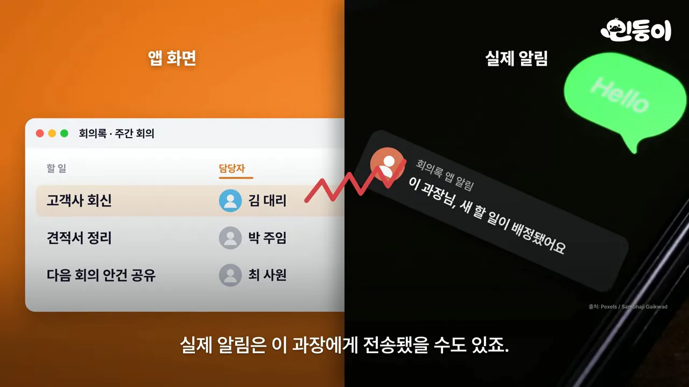
다른 모델끼리 독립 리뷰: pstack
pstack의 /interrogate는 Claude와 Grok처럼 서로 다른 모델이 같은 코드 변경을 따로 검토하게 해요. 아래 그림에서 가운데 겹친 곳에 놓인 '담당자 빈 값'과 '알림 두 번'이 두 모델이 함께 짚은 문제예요. pstack은 이런 공통 지적을 더 강한 신호로 봐요. 양쪽 끝에 하나씩만 나온 의견(함수 나누기, 그대로 두기 등)도 버리지 않고 비교해서 최종 판단에 반영해요.
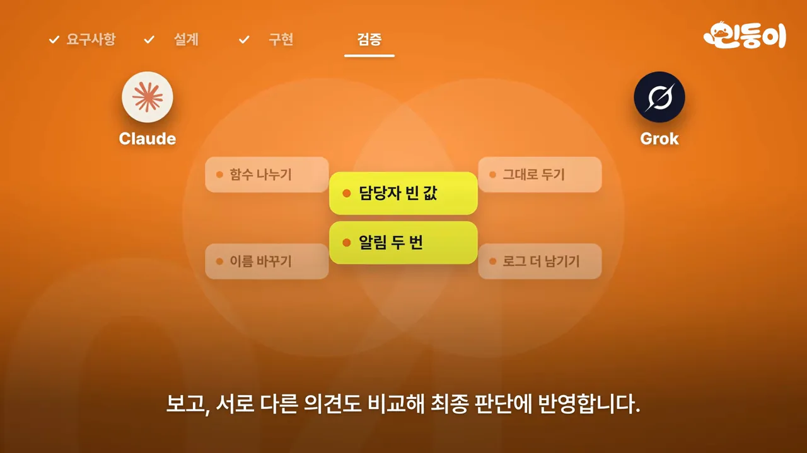
pstack은 실행 결과와 검증 증거도 중요하게 다뤄요. 담당자 배정 오류를 찾았다면 먼저 문제를 재현하고, 고친 다음, 같은 조건에서 제대로 동작하는지 다시 확인해요.
역할을 나눈 병렬 리뷰: Feature Dev
Feature Dev도 리뷰를 병렬로 돌리지만, 리뷰어마다 보는 기준을 나눠요. 화면 오른쪽 리뷰 에이전트 셋이 각각 단순성·중복, 버그, 규칙을 맡아요. 왼쪽 notify.ts에서 거의 같은 함수 두 개가 괄호로 묶여 있는데, 이게 '중복' 담당 리뷰어가 잡아낼 몫이에요.

처음 명세와 대조하기: Spec Kit
Spec Kit은 처음 쓴 명세와 개발 결과가 맞는지 확인해요. 구현 전에는 analyze로 명세와 계획 사이의 모순을 점검하고, 구현 후에는 converge로 아직 채우지 못한 요구사항을 찾아요. 빠진 기능이 있으면 작업 목록에 다시 넣고 implement로 마저 구현하게 이어 줘요.
아래 화면이 그 예예요. 명세 체크리스트에서 회의 요약과 할 일 추출은 체크됐지만 담당자 배정은 점선으로 비어 있어서 2/3이에요. 요약이 잘 되더라도 처음 약속한 담당자 배정이 빠졌다면 아직 끝난 게 아니에요.
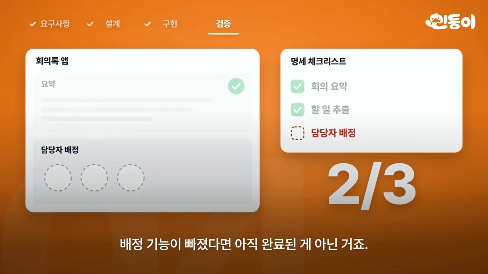
내 작업에 맞는 스킬 고르기와 시작하는 법
네 단계를 다 보고 나면 일곱 스킬이 비슷한 기능을 많이 갖고 있다는 게 보여요. 아래 화면처럼 대부분 네 단계 모두에 막대가 있어요. 다만 맷 포콕 줄만 점선으로 그려져 있는데, 앞에서 본 대로 단계마다 필요한 스킬을 골라 끼우는 방식이라는 표시로 읽혀요.
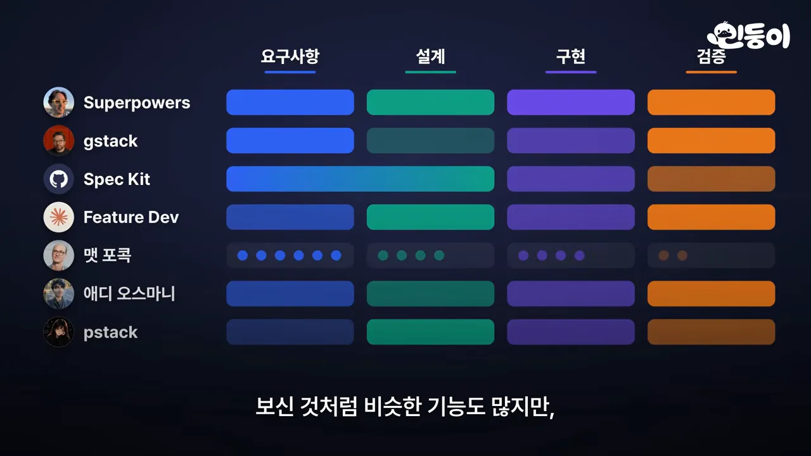
강조하는 부분과 작업 방식이 다르니, 영상은 '무엇을 원하느냐'로 고르라고 정리해요.
| 이럴 때 | 살펴볼 스킬 |
|---|---|
| 정해진 개발 절차를 체계적으로 따르고 싶을 때 | Superpowers |
| 제품 방향부터 기술 설계, 실제 QA까지 여러 관점에서 검토하고 싶을 때 | gstack |
| 여러 설계안 비교, 다른 AI 모델의 검토, 실행 검증까지 쓰고 싶을 때 | pstack |
| 질문, TDD, 아키텍처 개선처럼 필요한 스킬만 골라 쓰고 싶을 때 | 맷 포콕 skills |
| 요구사항부터 구현·테스트까지 실무 개발 원칙을 넓게 쓰고 싶을 때 | 애디 오스마니 agent-skills |
| 기존 코드 분석부터 설계·구현·리뷰를 한 흐름으로 하고 싶을 때 | Feature Dev |
| 명세를 기준으로 개발 전체를 관리하고 싶을 때 | Spec Kit |
시작하는 법
시작하는 방법은 세 갈래로 묶여요. 설치만 하면 알아서 붙는 것, 시작 명령 하나로 흐름을 여는 것, 필요한 스킬을 골라 부르는 것이에요.
영상 화면에서도 같은 내용을 보여 줘요. 터미널에 /office-hours, /poteto-mode, /feature-dev를 차례로 치는 장면이 가운데 묶음이에요.
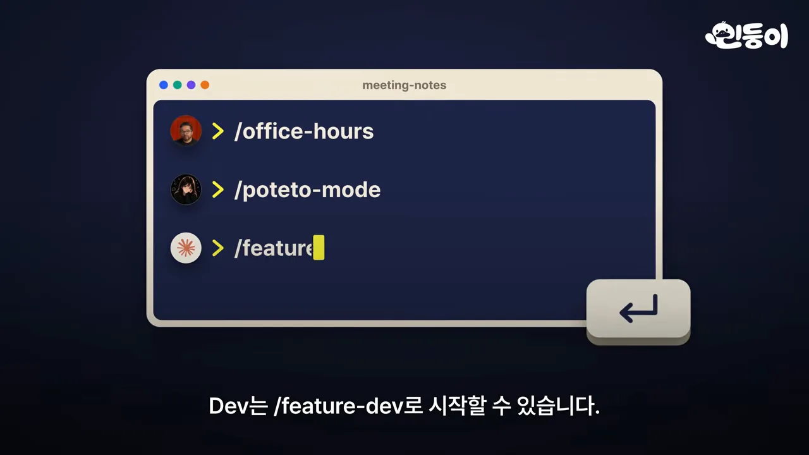
오른쪽 묶음은 이렇게 생겼어요. 맷 포콕의 저장소에는 grill-me, grill-with-docs, tdd, wayfinder 같은 스킬이 따로따로 있고, 애디 오스마니의 저장소는 'Define(무엇을 만들지 정하기)' 단계에 interview-me를 두는 식으로 단계별 스킬을 나열해요.
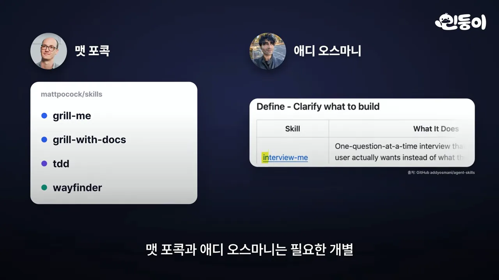
다른 선택지와 한 가지 주의
영상은 두 가지를 더 짚어요. 명세 기반 개발을 더 가볍게 시작하고 싶다면 OpenSpec, 개발하면서 얻은 경험을 다음 작업에 쌓고 싶다면 Compound Engineering도 있어요.
그리고 스킬을 많이 설치한다고 결과가 무조건 좋아지지 않는다고 말해요. 비슷한 절차가 겹치거나 서로 부딪칠 수 있어서예요. 지금 내 작업에서 어떤 부분을 보완하고 싶은지를 기준으로 고르는 게 핵심이에요. 영상에 나온 일곱 스킬의 저장소 주소는 아래 화면에 모여 있어요.
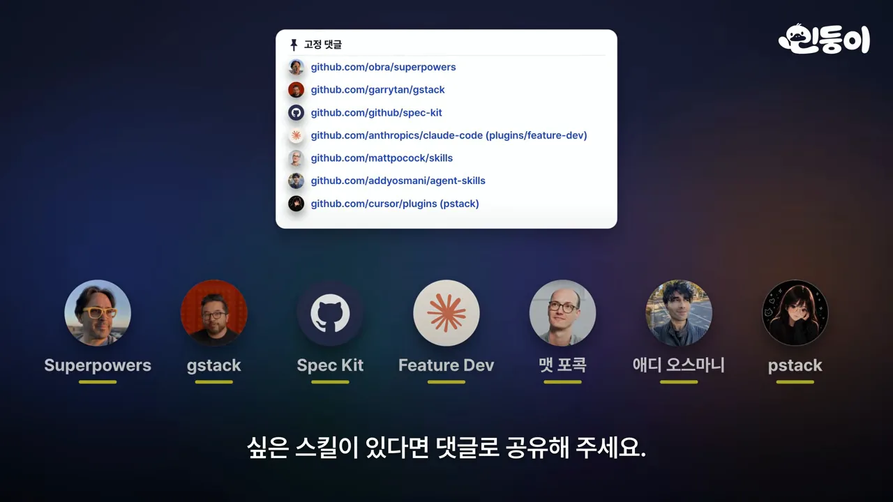